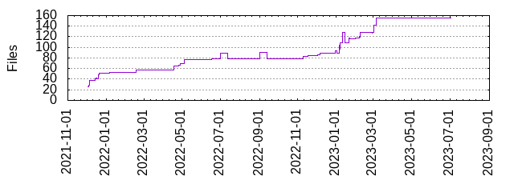

Files
- Total files
- 155
- Total lines
- 3581
- Average file size
- 836.48 bytes

| Extension | Files (%) | Lines (%) | Lines/file |
|---|
| 17 (10.97%) | 332 (9.27%) | 19 |
| bazel | 31 (20.00%) | 935 (26.11%) | 30 |
| bazelrc | 1 (0.65%) | 13 (0.36%) | 13 |
| bzl | 17 (10.97%) | 1296 (36.19%) | 76 |
| bzlmod | 1 (0.65%) | 1 (0.03%) | 1 |
| cjs | 1 (0.65%) | 11 (0.31%) | 11 |
| golden | 8 (5.16%) | 34 (0.95%) | 4 |
| jq | 1 (0.65%) | 12 (0.34%) | 12 |
| js | 18 (11.61%) | 83 (2.32%) | 4 |
| js_ | 3 (1.94%) | 10 (0.28%) | 3 |
| json | 8 (5.16%) | 66 (1.84%) | 8 |
| map | 1 (0.65%) | 0 (0.00%) | 0 |
| md | 6 (3.87%) | 404 (11.28%) | 67 |
| mts | 1 (0.65%) | 1 (0.03%) | 1 |
| sh | 4 (2.58%) | 113 (3.16%) | 28 |
| swcrc | 1 (0.65%) | 3 (0.08%) | 3 |
| ts | 28 (18.06%) | 64 (1.79%) | 2 |
| yaml | 5 (3.23%) | 148 (4.13%) | 29 |
| yml | 3 (1.94%) | 28 (0.78%) | 9 |